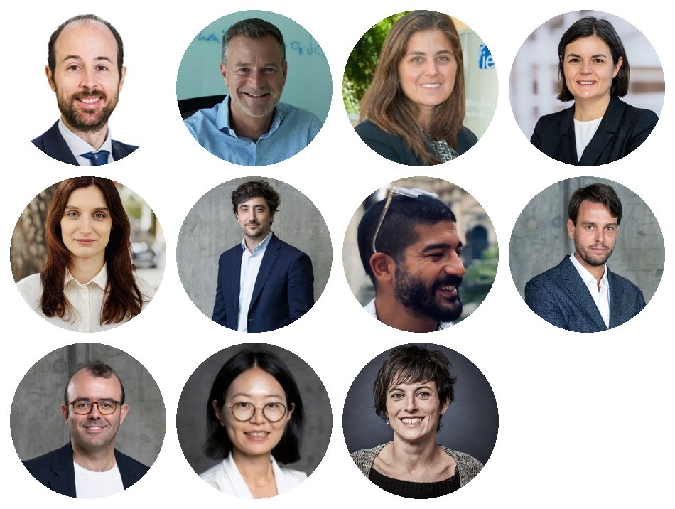

IE Economics Research Group
Faculty of the Department of Economics →
The IE Economics Research Group (IEERG) brings together the research faculty of the Department of Economics at IE University's School of Politics, Economics and Global Affairs (SPEGA) in Madrid.
The group's research spans labor, family and gender economics; health, education and inequality; development and environmental economics; monetary economics, macro-finance and climate economics; and applied econometrics. Our work is published in leading international journals and informs public policy in Spain and beyond.
The Economics Research Seminar Series is the main speaker series of the department. Talks take place on Thursdays, 14:00–15:00, at the María de Molina campus, Madrid. If you would like to be added to the seminar mailing list, please email the organizers.
The seminar series is currently organized by Sasha Cheipesh (sasha.cheipesh@ie.edu) and Toni Roldán (antonio.roldan@ie.edu).
Visiting us
External visitors are welcome. Please email the organizers at least one day in advance so that access to the campus can be arranged; a valid ID document will be required at reception.
To learn more about research across IE University, visit IE Research.
